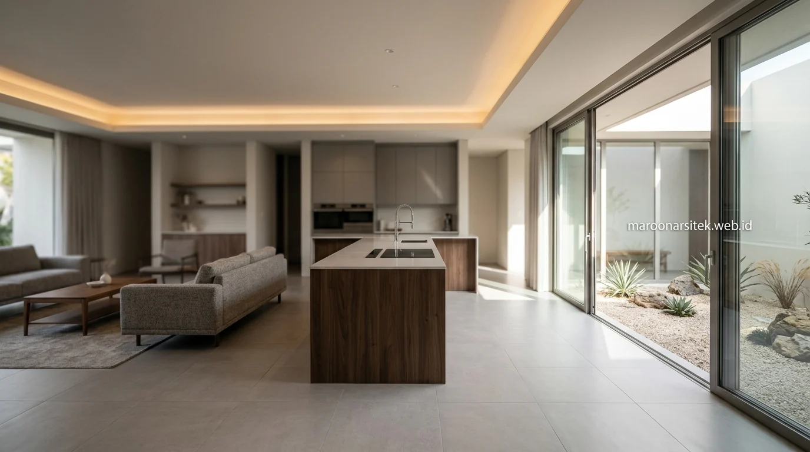

Desain rumah minimalis modern tren 2026 mengarah pada fasad bersih, bukaan lebar, material natural, dan tata ruang fungsional yang dirancang langsung oleh jasa arsitek rumah berpengalaman seperti Maroon Arsitek.
Rekomendasi Fasad Rumah Minimalis yang Banyak Diminati Klien
Fasad rumah minimalis modern menonjolkan garis horizontal tegas, kombinasi material, dan proporsi bukaan yang seimbang antara dinding masif dan kaca. Berikut beberapa arah desain fasad yang kerap diajukan klien kepada tim arsitek Maroon Arsitek dalam proses konsultasi:
- Fasad Monokrom & Aksen Kayu: Fasad monokrom dengan aksen kayu vertikal pada area carport dan teras depan.
- Batu Alam Candi: Kombinasi batu alam candi abu-abu dengan dinding plester putih untuk kesan hangat namun tetap modern.
- Panel Aluminium Composite (ACP): Panel aluminium composite panel (ACP) bertekstur kayu sebagai alternatif tahan cuaca dengan perawatan minim.
- Secondary Skin Kisi-kisi: Fasad dengan secondary skin berupa kisi-kisi kayu atau besi untuk kontrol cahaya matahari sekaligus privasi.
- Jendela Kaca Frameless: Jendela kaca berukuran besar tanpa banyak kusen (frameless) untuk kesan lapang dan modern.
- Kombinasi Atap Datar & Miring: Atap datar (flat roof) dikombinasikan dengan sebagian atap miring untuk drainase air hujan yang lebih optimal di iklim tropis.
Setiap kombinasi tersebut dapat disesuaikan dengan orientasi matahari, lebar lahan, dan anggaran proyek melalui konsultasi awal bersama arsitek rumah profesional.
Konsep Tata Ruang Minimalis untuk Lahan Terbatas
Tata ruang minimalis modern dirancang untuk memaksimalkan fungsi ruang pada lahan terbatas tanpa mengorbankan sirkulasi udara dan cahaya alami. Pendekatan ini banyak diterapkan pada proyek rumah tapak di kawasan perkotaan padat.
- Konsep Open Plan: Menyatukan ruang tamu, ruang keluarga, dan dapur dalam satu area tanpa sekat masif.
- Bukaan Void Atas: Void atau bukaan atas pada area tangga untuk membantu sirkulasi udara panas keluar dari rumah.
- Balkon Lantai Dua: Kamar tidur utama di lantai dua dengan balkon kecil untuk menambah ruang privat tanpa memperluas denah dasar.
- Courtyard Dalam: Void taman dalam (courtyard) berukuran kecil sebagai sumber cahaya dan udara untuk ruang di tengah bangunan.
- Storage Tersembunyi: Storage tersembunyi di bawah tangga atau built-in furniture untuk menjaga kesan rapi dan minim sekat visual.

Pendekatan tata ruang ini umumnya lebih efisien pada lahan dengan lebar di bawah delapan meter, sehingga dapat memaksimalkan pencahayaan tanpa harus memperluas bukaan pada dinding samping yang berbatasan dengan tetangga.
Pilihan Material Bangunan yang Mendukung Estetika Minimalis
Material bangunan yang tepat menentukan daya tahan sekaligus tampilan akhir desain rumah minimalis. Kombinasi material berikut umum digunakan pada proyek hunian minimalis modern:
- Bata Ringan (Hebel): Untuk dinding dengan hasil akhir lebih presisi dan bobot lebih ringan dibanding bata konvensional.
- Lantai Granit / Homogeneous Tile: Ukuran besar (60x60 atau 60x120) untuk kesan ruang lebih luas dengan garis nat yang minim.
- Kusen Aluminium / UPVC: Sebagai alternatif tahan rayap dan minim perawatan dibanding kayu solid.
- Drop Ceiling & Hidden Lamp: Plafon gypsum dengan drop ceiling pada area tertentu untuk penempatan lampu tersembunyi yang hangat.
- Cat Waterproofing Eksterior: Lapisan cat eksterior khusus cuaca ekstrem untuk menjaga tampilan fasad tetap bersih di iklim tropis dengan curah hujan tinggi.
Berdasarkan pengamatan umum pada tren pembangunan hunian di kawasan urban Indonesia dalam beberapa tahun terakhir, kombinasi bata ringan dan rangka baja ringan pada struktur atap semakin banyak dipilih karena proses pengerjaan yang relatif lebih cepat dibanding metode konvensional, khususnya untuk proyek rumah tapak dua lantai.
Ide Elemen Hijau dan Ruang Terbuka pada Rumah Minimalis
Elemen hijau bukan hanya nilai estetika, tetapi juga berfungsi menjaga suhu ruangan tetap sejuk pada iklim tropis. Ide berikut sering diterapkan pada desain rumah minimalis modern:
- Roof Garden: Taman atap pada dak beton untuk ruang bersantai sekaligus mengurangi radiasi panas yang masuk ke lantai bawah.
- Dry Garden Carport: Taman kering di area carport dengan tanaman minim perawatan seperti kaktus, sansiviera, dan sukulen.
- Vertical Garden: Dinding hijau pada sisi dinding yang berbatasan langsung dengan area terbuka.
- Courtyard / Sumur Cahaya: Bukaan taman kecil di tengah rumah yang juga berfungsi sebagai sumur cahaya alami (skylight).
- Paving Permeable: Perkerasan permeable pada carport agar air hujan tetap terserap ke tanah, mendukung sistem drainase lingkungan sekitar.
"Rumah minimalis modern yang ideal bukan sekadar indah dilihat, melainkan menyatu harmonis dengan sirkulasi udara, pencahayaan alami, dan kenyamanan penghuninya setiap hari."
— Erlang Sinatrya, Penulis & Arsitektur Specialist Maroon Arsitek
Mewujudkan Ide Desain Melalui Layanan Jasa Arsitek Profesional
Ide desain rumah minimalis akan lebih tepat sasaran ketika diterjemahkan oleh jasa arsitek rumah yang memahami kondisi lahan, regulasi bangunan setempat, dan kebutuhan fungsional penghuni. Maroon Arsitek mendampingi proses ini mulai dari konsep awal hingga gambar kerja siap bangun.
Proses konsultasi desain umumnya mencakup diskusi kebutuhan ruang, survei lahan, penyusunan konsep denah dan fasad, hingga revisi desain sesuai masukan klien. Pendekatan bertahap ini membantu memastikan hasil akhir desain sesuai ekspektasi sebelum memasuki tahap konstruksi, baik untuk proyek rumah baru di Jakarta maupun kota-kota lain di sekitarnya.
Klien yang ingin melihat referensi visual lebih lengkap dapat menelusuri kumpulan portofolio desain pada halaman galeri proyek, sementara penjelasan menyeluruh tentang cakupan layanan tersedia pada halaman jasa arsitek Maroon Arsitek.

Menyesuaikan Ide Desain dengan Kondisi Lahan dan Regulasi Setempat
Ide desain rumah minimalis yang terlihat menarik pada foto referensi tidak selalu bisa diterapkan begitu saja pada semua lahan, karena setiap kavling memiliki orientasi matahari, lebar jalan, dan ketentuan garis sempadan bangunan (GSB) yang berbeda. Proses penyesuaian ini menjadi bagian penting sebelum ide desain masuk ke tahap gambar kerja:
- Analisis Orientasi Matahari: Menentukan posisi bukaan jendela agar tidak terpapar panas matahari sore secara langsung.
- Penyesuaian GSB & Tinggi Pagar: Menyesuaikan tinggi pagar dan carport dengan ketentuan GSB pada wilayah setempat, khususnya untuk lahan di kawasan perumahan dengan aturan tata ruang tertentu.
- Perhitungan KDB (Koefisien Dasar Bangunan): Memastikan luas tutupan bangunan tetap sesuai izin resmi daerah (PBG).
- Penataan Sirkulasi Lahan Sempit: Menyesuaikan denah dengan lebar lahan aktual, terutama pada kavling dengan lebar di bawah tujuh meter yang memerlukan penataan sirkulasi lebih cermat.
- Simulasi Pencahayaan & Bayangan: Menguji pencahayaan ruang dalam pada jam-jam tertentu agar ruangan tetap terang alami tanpa ketergantungan lampu di siang hari.
Tahapan penyesuaian ini biasanya dilakukan bersamaan dengan proses survei lahan awal, sehingga ide desain yang dipilih klien dapat langsung diuji kelayakannya terhadap kondisi nyata di lapangan sebelum masuk ke tahap perhitungan anggaran RAB dan proses tahapan gambar kerja arsitektur.